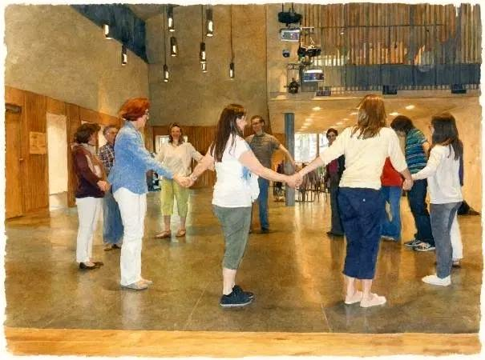

Danse et prière — Danse de terre sainte
Notre groupe s’adresse à toutes les générations, il est interconfessionnel et célèbre le Seigneur à travers les chorégraphies des danses d’Israël.
Chaque rencontre débute par un temps de louange et d’écoute de la Parole, pour se présenter sous le regard de Dieu ; ensuite la prière se poursuit par la danse, dans un climat simple et fraternel.
Méditatives ou festives, les danses nous permettent d’entrer autrement dans la découverte de la Parole, célébrant ensemble l’amour de Dieu et la vie qu’il nous donne !
Niveau : débutant à intermédiaire en simplicité.
Deux mardis soir par mois, de 19h30 à 21h30, à La Halte
- 19h30 – 20h00 : prière
- 20h00 – 21h30 : danse
Listing des danses, pas et musiques
(en préparation)

